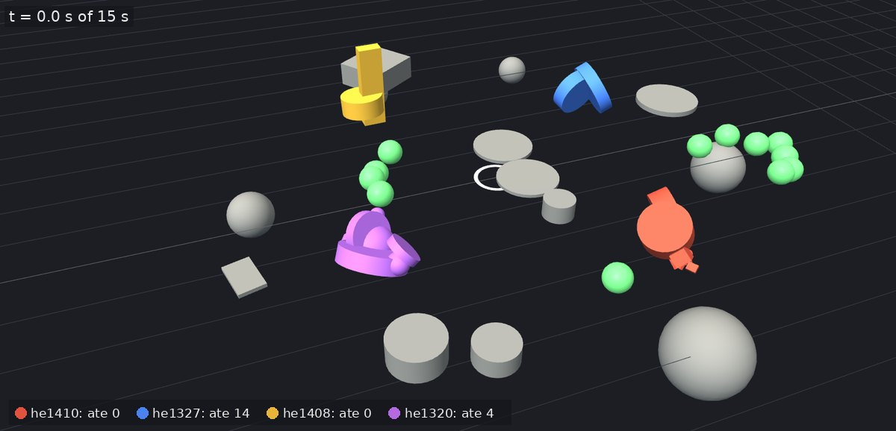
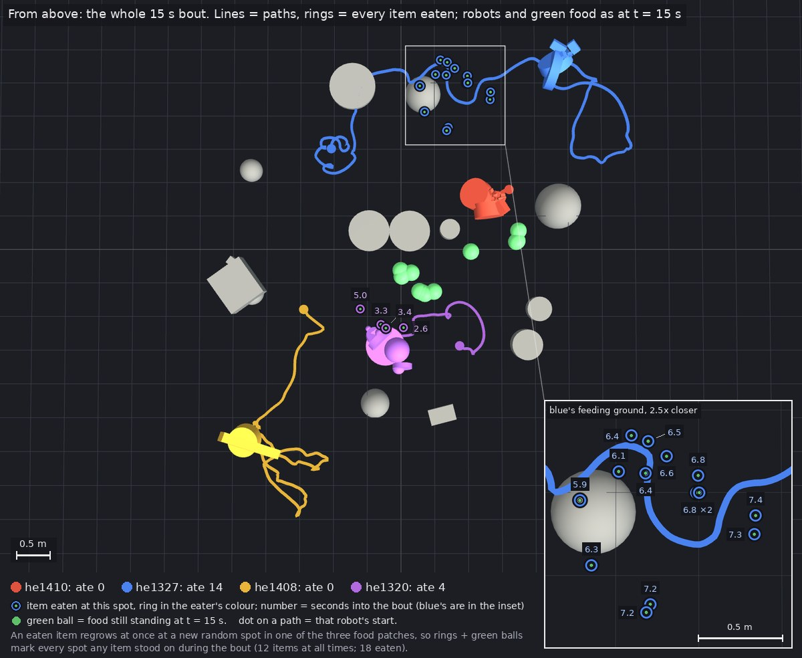
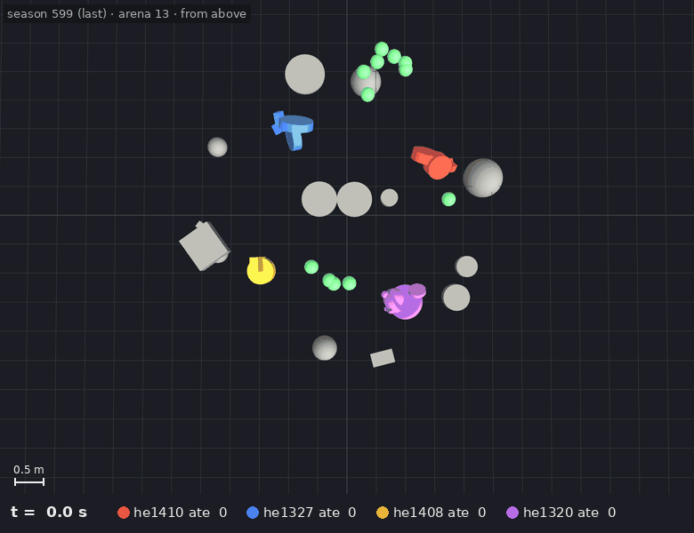
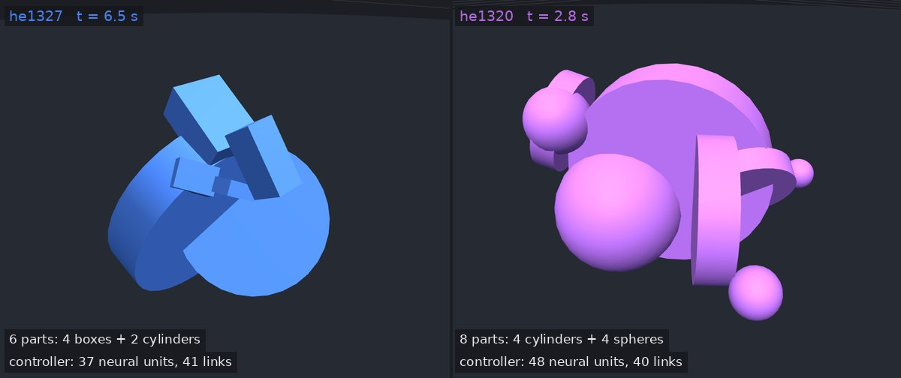
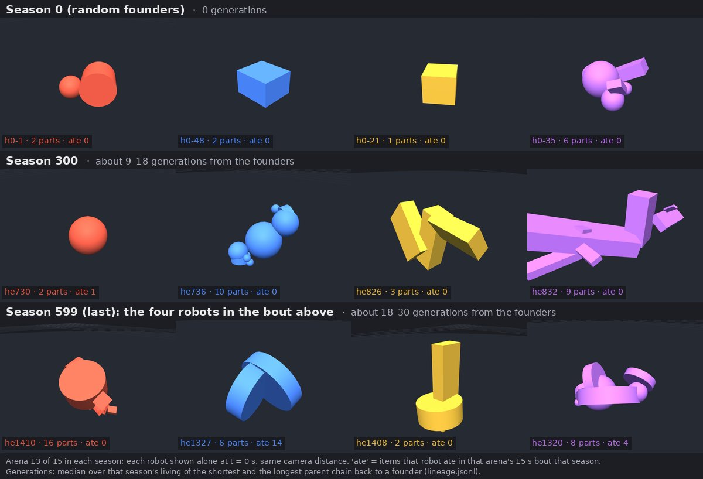

What the simulator does
Robots live in a shared physical arena. Each one's body (boxes, spheres and cylinders joined by motors) and its neural controller are both written in its genome. Nobody scores them. They spend energy moving, gain it by eating, breed when they have enough and die of old age or hunger. Whatever reproduces shapes the next generation. These stills are re-simulated from one saved run and checked against its own record: every robot that could be checked ate exactly what the run recorded.
All the stills below come from one 15-second bout late in a long run; How time works explains where it sits.




Source: one run from the study Does a compass evolve where it pays more? (patchy world, seed 801), evolving-body population. Stills 1–4 and the animation are one bout, in arena 13 of season 599; the timeline panel in the next section follows the same arena. Each is a picture of what the simulator does, not evidence for any result below.
How time works
There are three clocks: the bout, the season and the run. Evolution happens across seasons, not within a bout.
- A bout is 15 seconds of physics. Four robots share an arena, move and eat. What a robot eats in its bout is its income for the season. The stills and animation above are one bout.
- A season is one bout for everyone, then the books are settled. Each population has 60 slots, so its robots are split into 15 arenas of four. After the bouts, in order:
- every robot gains energy for what it ate and pays a fixed cost for being alive, and ages by one season;
- any robot with no energy left starves, and any robot that reaches 60 seasons dies of age;
- any robot with enough banked energy breeds if a slot is free, passing some of its energy to its child. The child’s genome is the parent’s, mutated, and about 30% of births mix in a second parent.
- A run is 600 seasons. Robots live up to 60 seasons and can have several children over a lifetime, so generations overlap and 600 seasons is not 600 generations. Measured from each robot’s family tree, the last season’s robots are about 18 to 30 generations from their random founders.
One run, 600 seasons (“gens” = generations from the founders). Every season has a bout in every arena. The one shown above is arena 13 in the last season.
So the robots in the bout are a snapshot of a late generation. They also differ in age: blue was 55 seasons old, violet had reached 60 and died of age that season, and red and gold were in their first season. The panel below follows the same arena through the run.

Movement and eating evolve without a fitness function
- In an ecology where creatures simply live, eat, breed and die, with body and brain evolving together as pictured above, locomotion evolved within about 20 generations on 6 of 6 seeds. Cheaper, more efficient locomotion followed.
- Neutral-drift controls, with the same mutation and no selection, never learn to eat.
- Foraging yield is heritable, at 0.34–0.51, against about 0 under drift.
- This was pre-registered and then replicated on fresh seeds (paper 5).
What the food compass is
The robot in the compass tests has a smell sensor on each of its two wheels, and each reads how strongly food is sensed on that side. The compass is a small circuit in the robot's brain. Both sensors feed one shared neuron, the left with a plus sign and the right with a minus sign, so the neuron reports how much stronger the smell is on one side than the other. Its output steers the robot. When food smells stronger on the left, the robot turns left. When both sides smell the same, it doesn't turn.
Prior art. The principle is Valentino Braitenberg’s. In Vehicles: Experiments in Synthetic Psychology (MIT Press, 1984), he showed that two sensors wired to two wheels are enough to steer a vehicle toward a source or away from it, depending only on how the wires cross and on their signs. Our circuit routes the left–right difference through one shared neuron instead of direct wires, but it is his idea. We did not set out to invent it. The question here is whether evolution finds and keeps a Braitenberg-style steering circuit when nothing rewards it except eating more. The “toward or away” coin flip below is the difference between his approaching and fleeing vehicles.
One neuron and four connections: two sensors in, with opposite signs, and one output to each wheel. The difference in smell turns the robot toward the stronger side. Evolution has to get all four connections, their signs and their strength right before the circuit pays.
- Why it is hard to evolve. The parts have to arrive together, with the right signs.
- A sensor wired on its own makes the robot spin whenever it smells anything. That is worse than nothing: it cost about 1.5 food items per bout in one test.
- Evolution without help built the right shape in only 84 of 200,000 lineages in one measurement. When it did, whether it pointed toward food or away was a coin flip (paper 8).
- What it is worth. At the strength we planted, a working compass adds about 0.84 food items per bout in the uniform world and about 2.1 in the patchy world, where food clusters. The next section explains what that is worth to a robot.
- Planted and held. In the tests below we wrote this circuit, at that strength, into half of the founding robots' genomes, then let mutation and selection run. Held means that after 300 and 600 seasons, more of the planted founders' descendants still carry a working copy than mutation alone would leave.
- How we know it does the work. Cutting the circuit's input connections in the evolved robots removes its foraging gain.
The circuit is defined on the wheeled robot's two-sensor layout, which is why these tests use that robot and not the evolved bodies pictured above.
What we mean by “pays”
Food is the robots’ only income. Every season each robot spends a fixed amount of energy just to stay alive, it can breed only once it has banked enough, and a robot that runs out starves. So a robot that eats more leaves more offspring. That is the whole of selection here: nobody scores the robots.
A trait pays when it measurably raises how much a robot eats. We measure this directly. We take each population’s best robots, install the compass, and count the food they eat per 15-second bout against the same robots without it, over many matched arenas.
| World | Food per bout, no compass | With compass |
|---|---|---|
| Uniform | 1.31 | +0.84 (+64%) |
| Patchy (clustered) | 1.54 | +2.10 (+137%) |
Averages over ten founding populations. The compass’s gain is about 2.5 times larger in the patchy world, plausibly because turning toward a smell there leads to several items at once. In the patchy world, a decoy compass fed a fake smell signal gains essentially nothing on 9 of 10 populations, so the gain comes from actually smelling food.
- “Pays enough” means the extra breeding it buys outpaces mutation, which damages a planted compass by roughly 28% per generation. In the patchy world the compass was kept on 9 of 10 seeds. In the uniform world it was kept on none. We don’t know exactly where between the two the line falls. The patchy world also had more food and bred faster, so the payoff is the leading explanation for the difference, not the only one.
- “Doesn’t pay” is a compass wired too weakly to change how much the robot eats. That is the starting point of the “from scratch” test further down.
Selection keeps a working compass in the world where it pays more
We planted the compass described above into founder populations. This test used the project's fixed-body robot: its body is a hand-designed wheeled robot, and only its controller evolves. That isolates the question of whether selection keeps a sensor-driven behaviour. The compass as built is defined on that robot’s wheel layout, so it cannot be planted in the evolved bodies pictured above as it stands; whether an evolved body could carry a compass of another shape is untested. Then we let 600 seasons of mutation and natural selection run on 10 paired seeds in two worlds: a uniform one and a patchy one, where food clusters and the compass is worth about 2.5× more.
Each dot is one seed. A filled dot means the planted compass was still held at seasons 300 and 599, beyond what mutation alone would leave (the study Does a compass evolve where it pays more?, its “holding” test).
- Not luck. Without selection, a compass stays held on about 1% of runs. The chance of 9 of 10 by luck is about 2 in 10,000, checked against each run's own family tree.
- The compass does the work. All 10 patchy lines forage by compass, and none of the uniform lines do. In the four patchy lines tested, knocking out the planted unit removes essentially all of the compass's foraging gain.
- Reproducible. All 242 evidence files regenerate byte for byte from saved checkpoints.
- Checked independently. A separate reviewer re-derived every number before the result was accepted.
Two limits. First, this shows selection holding a compass we installed, not inventing one. Second, the patchy world also raised births, income and turnover, so the payoff is the leading explanation but not the only difference between the worlds.
Why evolution stalls, and what we can change
- The mutation operator steadily erases a planted compass: only 2–3% survives 16 generations of mutation alone.
- About two thirds of that erasure comes from one mechanism, a random walk in the units' resting bias. Freezing it cuts the per-generation erasure from 0.28 to 0.09.
- In the world where the compass pays more, selection outran the erasure. Where it pays less, the erasure won. That gave us a lever to test rather than an unexplained wall, and we tested it today (below).
Stopping the erasure keeps the compass in the best robots, but selection is too weak to spread it
In the uniform world, where the compass was lost on every seed, we re-ran the same 10 seeds with one change: the bias walk frozen, so mutation erases the compass about three times more slowly. Same fixed-body robot, same rules registered in advance, same independent review (the study Is mutation the stall? Freezing the bias walk).
Each dot is one seed. A filled dot means the line's best robots forage by the planted compass, and knocking it out removes the gain.
- In half the populations, the best robots keep it and use it. With the bias walk frozen, 5 of 10 lines forage by compass, against none under default mutation, and foraging is higher on 9 of 10 paired seeds. A check added after the data (not a registered test) found the top earners carrying the compass in 31 of 70 samples, against 5 of 70.
- But the population does not. The registered question was whether selection raises the compass's share of the whole population above what mutation alone leaves. It did so on 1 of 10 seeds, against the 3 or more needed. The registered verdict is falsified.
- The test could have passed. The reviewer checked that the bar was reachable and, if anything, lenient, and that every number regenerates byte for byte.
- What it tells us. Selection's pull on the compass is weak: below the registered limit of about 0.1 per generation, and a model-based estimate from the runs puts it between 0 and 0.08. In this world, mutation decides how much compass survives for the best robots to use; it does not decide whether selection spreads it. The frozen-bias change was not tested in the patchy world.
Limit: freezing the bias walk also raised income slightly, so the change is to the whole robot's biases, not only the compass.
Perception evolving from scratch
- A larger payoff alone did not turn a planted compass that was too weak to pay into a working one: 0 of 7 usable seed pairs (the “from scratch” test of Does a compass evolve where it pays more?). With seven pairs, this test would miss a real effect about 1 time in 5.
- At the current scale, an unseeded run proposes only about 0.26 compass-like structures in 600 seasons. Evolution from scratch is unlikely at this scale whatever selection does. That is a question of proposal rate and compute, not of whether selection works.
Visible re-adaptation after a sudden change of world
A second line of work asks whether populations visibly re-adapt when their world changes under them (Can adaptation after a challenge be seen at all?). Partway through a run, the rough, obstacle-strewn ground was replaced with flat ground. We then measured whether the robots got better on the new ground over about 21 rounds of reproduction, against matched runs where the world did not change and against a control for population turnover alone. Both populations were tested, the fixed-body robot and the evolving bodies, on 19 usable paired seeds.
- Re-adaptation was not seen in either population. Both registered tests read “not supported”.
- What it rules out: a large improvement by the fixed-body robot on flat ground.
- What it doesn’t rule out: a decline of the size an earlier, shorter test found, or smaller effects either way. That earlier test found a small, fragile decline in the fixed-body robot after the change. At the longer window the estimate is about the same size, but it is no longer distinguishable from chance.
This is an honest null with stated limits, not evidence that adaptation doesn’t happen. The test had roughly an even chance of catching an effect as large as the earlier one, and little chance of catching one half that size.
Still to read today
| Test | Question | Expected (UTC) |
|---|---|---|
| Evolvability benchmark | How strongly does the simulator respond to selection? Robot lines are selected up and down on one heritable trait, beside unselected control lines, under the default mutation and the frozen-bias setting. | about 22:00 |
How the results are held to account
- Every test's rules and thresholds are registered before any data exists, and an independent reviewer checks the design before any run starts.
- Nobody reads a running arm's numbers until every arm has finished.
- Every "nothing found" verdict states how likely the test was to miss a real effect, at the number of seeds actually usable.
- An independent reviewer re-derives each readout before it is accepted. Today that review overturned a mid-run change to an analysis, because the rule fixed before the data is the one that counts.
What comes next
- Strengthen the pull, not just the operator. The bias-walk freeze study showed the operator change keeps the compass in the best robots of half the populations, and that the remaining limit is how weakly selection favours it. The next lever is the strength of that pull.
- Measure evolvability: started today. The evolvability benchmark (How evolvable is the simulator?) selects lines of evolving-body robots up and down on one heritable trait, beside unselected controls. It gives one headline number for how strongly this simulator responds to selection, with an interval, and compares the default mutation with the frozen-bias setting. It follows the same rules as everything else: registered in advance, independently reviewed, and run blind. The result is expected tonight. If the lines separate and the controls stay flat, that number is the benchmark any future change to the simulator is measured against.
- Attempt evolution from scratch. Try this only once the operator holds structure and proposes it often enough. That needs either more compute or a higher proposal rate, and we can size it once steps 1 and 2 are in.